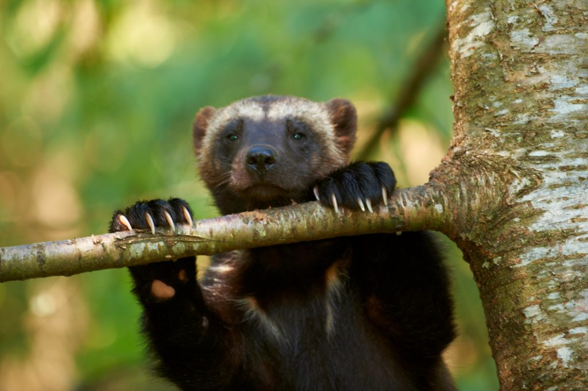
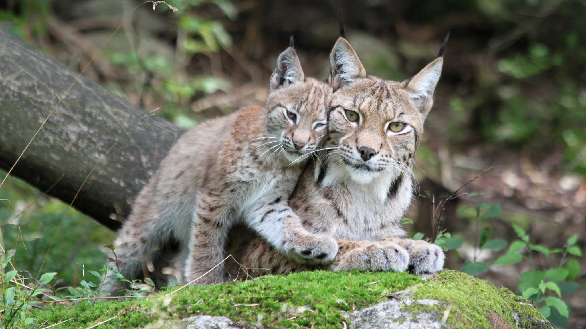

Björnen är Sveriges största rovdjur. Många tycker björnen är spännande, men många tycker också att de verkar lite läskiga och vill helst inte möta dem i skogen.
Järven är det mest okända av våra stora rovdjur. Trots det har den ett envist rykte om att vara aggressiv och att den dödar för skojs skull. Men det är bara en myt.
Lodjuret är en stor katt. Faktiskt Europas största kattdjur! Flera gånger har lodjuret röstats fram som Sveriges mest populära vilda djur. Men alla tycker inte att de bara är fina och snälla. Lodjuret är det rovdjur som tar mest renar för renägarna.